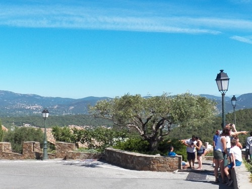

Un village perché classé parmi les plus beaux villages de France, dominant les vignobles et le golfe de Saint-Tropez.
À découvrir à Gassin

Randonnée panorama des Barri
Gratuit
En savoir plus →
Dégustation vins du golfe
Payant
Réserver →
Visite du village classé
Gratuit
En savoir plus →